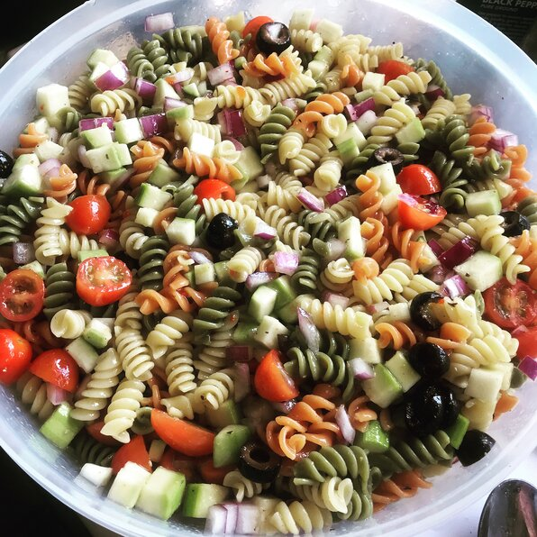

Pasta!

Description!
(website creator disclaimer, this is a weak recipe and i wouldnt personally use it...)
Here we have a wonderful dish thats good for the person on the go!
once made its perfect for a snack or as a side to many meals! great
for those hot summer days to refresh and comfort you, also
its very easy to customize this dish, changing measurement ratios
and vegetables you use at your own discretion. Total Cook time is
~1 hour and 25 minutes, and this recipe provides 8 servings.
Nutritional Facts per serving
- 387 calories
- protein 8.3g
- carbohydrates 51.7g
- fat 16.7g
- sodium 924mg
Ingredients
- 1 (16 ounce) package tri-colored pasta assortment
- 2 large tomatoes, diced
- 1 large cucumber, peeled and diced
- 1 red onion, finely chopped
- 1 (16 ounce) bottle Italian-style salad dressing
Steps
- Bring a large pot of lightly salted water to a boil. Add pasta and cook for 8 to 10 minutes or until al dente; drain and rinse in cold water.
- In a large bowl combine tomatoes, cucumbers, onion, cooled pasta and Italian dressing. Refrigerate overnight, or for at least 1 hour.